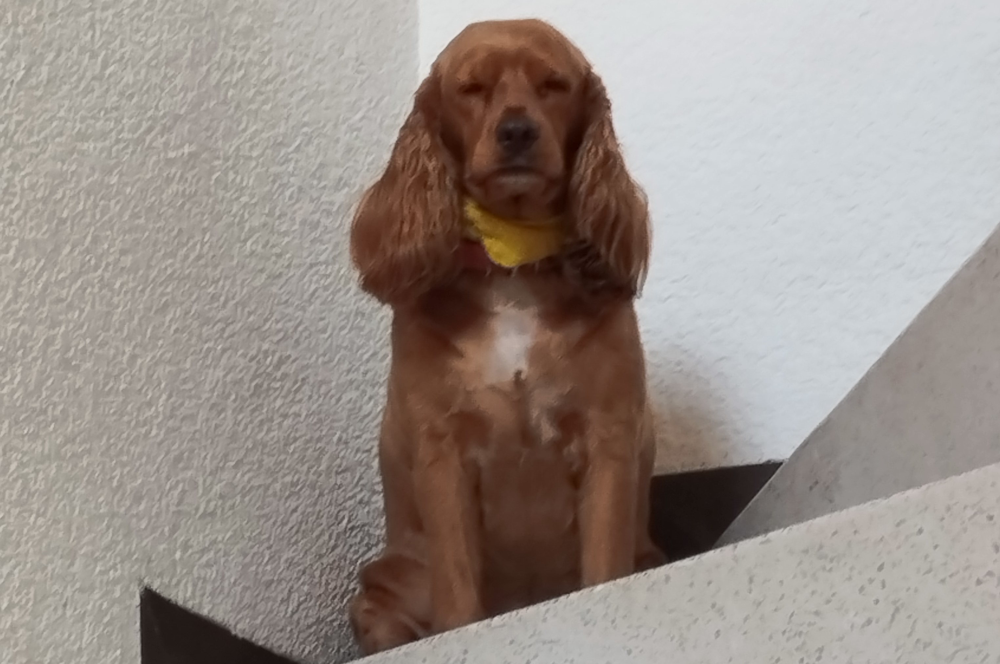

El nombre de mi mascota es Allura su nombre es de una princesa guerrera de una serie animada llamada voltron
Tan solo tiene 3 años de edad es una cocker spaniel es muy cariñosa con las personas que conoce pero es muy uraña no le agrada ver gente que no conoce se pone muy a la defensiva cuando alguien que no conoce se nos acerca, es una perrita muy concentida, muy juguetona, muy comelona es por eso que le ponemos el apodo de la gorda y es muy dormilona tambien.